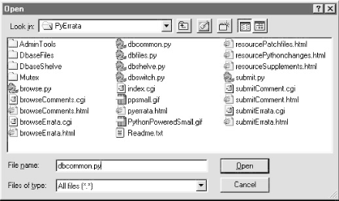

| I l@ve RuBoard |
|
14.2 The PyErrata Web SiteThe last chapter concluded with a discussion of the downsides of deploying applications on the Web. But now that I've told you all the reasons you might not want to design systems for the Web, I'm going to completely contradict myself and present a system that cries out for a web-based implementation. This chapter presents the PyErrata web site, a Python program that lets arbitrary people on arbitrary machines submit book comments and bug reports (usually called errata) over the Web, using just a web browser. PyErrata is in some ways simpler than the PyMailCgi case study presented in the previous chapter. From a user's perspective, PyErrata is more hierarchical than linear: user interactions are shorter and spawn fewer pages. There is also little state retention in web pages themselves in PyErrata; URL parameters pass state in only one isolated case, and no hidden form fields are generated. On the other hand, PyErrata introduces an entirely new dimension: persistent data storage. State (error and comment reports) is stored permanently by this system on the server, either in flat pickle files or a shelve-based database. Both raise the specter of concurrent updates, since any number of users out in cyberspace may be accessing the site at the same time. 14.2.1 System GoalsBefore you ponder too long over the seeming paradox of a book that comes with its own bug-reporting system, I should provide a little background. Over the last five years, I've been fortunate enough to have had the opportunity to write four books, a large chapter in a reference book, and various magazine articles and training materials. Changes in the Python world have also provided opportunities to rewrite books from the ground up. It's been both wildly rewarding and lucrative work (well, rewarding, at least). But one of the first big lessons one learns upon initiation in the publishing business is that typos are a fact of life. Really. No matter how much of a perfectionist you are, books will have bugs. Furthermore, big books tend to have more bugs than little books, and in the technical publishing domain, readers are often sufficiently savvy and motivated to send authors email when they find those bugs. That's a terrific thing, and helps authors weed out typos in reprints. I always encourage and appreciate email from readers. But I get lots of email -- at times, so much so that given my schedule, I find it difficult to even reply to every message, let alone investigate and act on every typo report. I get lots of other email too, and can miss a reader's typo report if I'm not careful. About a year ago, I realized that I just couldn't keep up with all the traffic and started thinking about alternatives. One obvious way to cut down on the overhead of managing reports is to delegate responsibility -- to offload at least some report-processing tasks to the people who generate the reports. That is, I needed to somehow provide a widely available system, separate from my email account, that automates report posting and logs reports to be reviewed as time allows. Of course, that's exactly the sort of need that the Internet is geared to. By implementing an error-reporting system as a web site, any reader can visit and log reports from any machine with a browser, whether they have Python installed or not. Moreover, those reports can be logged in a database at the web site for later inspection by both author and readers, instead of requiring manual extraction from incoming email. The implementation of these ideas is the PyErrata system -- a web site implemented with server-side Python programs. PyErrata allows readers to post bug reports and comments about this edition of Programming Python, as well as view the collection of all prior posts by various sort keys. Its goal is to replace the traditional errata list pages I've had to maintain manually for other books in the past. More than any other web-based example in this book, PyErrata demonstrates just how much work can be saved with a little Internet scripting. To support the first edition of this book, I hand-edited an HTML file that listed all known bugs. With PyErrata, server-side programs generate such pages dynamically from a user-populated database. Because list pages are produced on demand, PyErrata not only publishes and automates list creation, it also provides multiple ways to view report data. I wouldn't even try to reorder the first edition's static HTML file list. PyErrata is something of an experiment in open systems, and as such is vulnerable to abuse. I still have to manually investigate reports, as time allows. But it at least has the potential to ease one of the chores that generally goes unmentioned in typical publishing contracts. 14.2.2 Implementation OverviewLike other web-based systems in this part of the book, PyErrata consists of a collection of HTML files, Python utility modules, and Python-coded CGI scripts that run on a shared server instead of on a client. Unlike those other web systems, PyErrata also implements a persistent database and defines additional directory structures to support it. Figure 14-1 shows the top-level contents of the site, seen on Windows from a PyEdit Open dialog. Figure 14-1. PyErrata site contentsYou will find a similar structure on this book's CD-ROM (view CD-ROM content online at http://examples.oreilly.com/python2). To install this site on the Net, all the files and directories you see here are uploaded to the server machine and stored in a PyErrata subdirectory within the root of the directory that is exposed to the Web (my public_html directory). The top-level files of this site implement browse and submit operations as well as database interfaces. A few resource page files and images show up in this listing too, but are ignored in this book. Besides files, this site has subdirectories of its own:
We'll meet the contents of the database subdirectories later in this chapter, when exploring the database implementation. 14.2.3 Presentation StrategyPyErrata takes logic factoring, code reuse, and encapsulation to extremes. Top-level scripts, for example, are often just a few lines long and ultimately invoke generic logic in common utility modules. With such an architecture, mixing short code segments with lots of screen shots makes it tough to trace the flow of control through the program. To make this system easier to study, we're going to take a slightly different approach here. PyErrata's implementation will be presented in three main sections corresponding to major functional areas of the system: report browsing, report submission, and database interfaces. The site root page will be shown before these three sections, but mostly just for context; it's simple, static HTML. Within the browsing and submission sections, all user interaction models (and screen shots) are shown first, followed by all the source code used to implement that interaction. Like the PyForm example in Chapter 16, PyErrata is at heart a database-access program, and its database interfaces are ultimately the core of the system. Because these interfaces encapsulate most low-level storage details, though, we'll save their presentation for last. Although you still may have to jump around some to locate modules across functional boundaries, this organization of all the code for major chunks of the system in their own sections should help minimize page-flipping.
|
| I l@ve RuBoard |
|